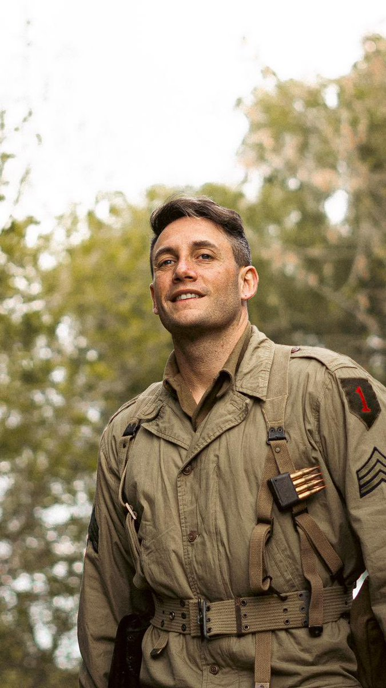

Bienvenido
¡Reciclar es importante! En este sitio web, te hablaremos sobre nuestro programa de reciclaje. A continuación te dejaremos una imagen para que sepas como reciclar en una botella.

Estas botellas pueden ser llevadas y entregadas a nuestras sucursales. Te preguntarás, ¿Dónde quedan sus sucursales?
Hasta el momento solo tenemos cuatro distribuidas en todo el país.
Sucursal en Buenos Aires:
Avellaneda Av. Bartolomé Mitre 5425.Sucursal en Córdoba:
Calle San Jerónimo 150, Córdoba.
Sucursal en Mendoza:
Avenida San Martín 850, Mendoza.
Sucursal en Santa Fe:
Calle San Martín 800, Rosario.
Programa de reciclaje
En RecycleWorld utilizamos todo lo reciclable para fabricar ladrillos y construir con ellos.
Los ladrillos ecológicos son una alternativa sostenible y respetuosa con el medio ambiente para la construcción.
Se fabrican utilizando materiales reciclados y técnicas que reducen el impacto ambiental en comparación con los ladrillos tradicionales.
A menudo, estos ladrillos están hechos de materiales como plástico reciclado, vidrio,
cerámica, papel, cartón o incluso residuos de construcción.
Tambien creamos una calculadora para que puedas calcular cuantos ladrillos puedes hacer con el plástico recaudado.
Proceso de fabricación
1. Selección de materiales
Los materiales reciclados se seleccionan y clasifican según su tipo y calidad.
Por ejemplo, el plástico se tritura en pequeños trozos, el vidrio se muele en partículas finas
y los residuos de construcción se trituran hasta obtener un tamaño uniforme.
2. Mezcla de materiales
Los materiales seleccionados se mezclan en proporciones específicas.
Esta mezcla puede incluir diferentes tipos de materiales reciclados para
lograr la resistencia y durabilidad deseada.
Se incorpora agua para crear una mezcla homogénea.
3. Aglutinantes y aditivos
Se agregan aglutinantes como cemento, cal u otros aditivos que ayudan a unir
los materiales y proporcionar resistencia a los ladrillos.
Estos aditivos pueden variar dependiendo de la composición de los materiales reciclados.
4. Moldeado
La mezcla se vierte en moldes que tienen la forma y tamaño de un ladrillo estándar.
Los moldes se prensan y compactan para eliminar el exceso de aire y asegurar una forma uniforme.
5. Curado
Los ladrillos se dejan curar y endurecer.
Estos se dejan secar al aire libre o en secaderos controlados, utilizando la energía solar o térmica para acelerar el proceso.
6. Pruebas de calidad
Los ladrillos pasan por pruebas de calidad para garantizar que cumplan con los estándares de resistencia y durabilidad requeridos para su uso en construcción.
Plantas de producción
Tenemos varias plantas de producción distribuidas en algunas zonas de Argentina.
Planta EcoBrick
Ubicada en Buenos Aires, esta planta es la principal instalación de producción de ladrillos ecológicos de RecycleWorld.
Cuenta con maquinaria avanzada para la mezcla y compactación de materiales reciclados, así como sistemas de secado eficientes.
La planta tiene capacidad para procesar grandes volúmenes de restos cerámicos, vidrio reciclado, plásticos y otros materiales, y produce una amplia gama de ladrillos ecológicos para su distribución.
Centro EcoCycle
En Córdoba, RecycleWorld tiene un centro de producción más pequeño pero altamente especializado.
Este centro se enfoca en ladrillos ecológicos de diseño específico y se destaca por experimentar con nuevos materiales reciclados y tecnologías de fabricación más sostenibles.
Planta GreenBrick
Ubicada en Mendoza, esta planta de producción está estratégicamente situada para aprovechar los recursos regionales.
Se centra en la producción de ladrillos ecológicos para proyectos de construcción locales, con un enfoque en la adaptación de sus productos a las necesidades climáticas de la región.
Nuestros objetivos y misiones
Nuestra mision es ser reconocidos mundialmente para poder llegar a los paises mas necesitados y aportar con lo que podamos para mejorar la calidad de la mayoria de la infraestructura.
Esto nos llevara mucho tiempo, pero no duden que haremos lo posible para lograrlo!!!
Queremos tocar el corazón de cada pais del mundo para lograr que el planeta sea más limpio.
Nuestro objetivo es incentivar al reciclaje para que los residuos no sean desechados y sean reutilizados.
Pero para ello, precisamos de la ayuda de todos ustedes para poder progresar y
potenciar la recoleccion para la construccion de escuelas, hospitales, viviendas y mucho más en las zonas más precarias.
Estamos tratando de aportar una solucion al problema de la acumulacion de residuos convirtiendolos en material nuevo. RecycleWorld quiere ser visto como una de las principales organizaciones en el ámbito del reciclaje.
Beneficios de nuestros ladrillos ecológicos
A continuación les daremos algunos de los beneficios del uso de los ladrillos ecológicos
Reducción de residuos
Utilizan materiales que de otra manera podrían haber terminado en vertederos, reduciendo así la cantidad de desechos.
Menor impacto ambiental
Requieren menos recursos naturales y energía en comparación con la producción de ladrillos convencionales.
Versatilidad y durabilidad
Ofrecen características de durabilidad y rendimiento similares a los ladrillos convencionales, siendo aptos para diversas aplicaciones de construcción.
Contribución a la sostenibilidad
Promueven un enfoque más sostenible en la industria de la construcción al reutilizar materiales y reducir la huella ambiental.
Agradecimiento especial
Queremos destacar a uno de nuestros mayores colaboradores, veterano de guerra, licenciado en informatica, programador que nos ayudó a hacer la página.
Momo la dinastía
